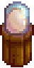

Ostrich Incubator
| Ostrich Incubator | |
 |
|
| Hatches ostrich eggs into baby ostriches. Place in a barn. | |
| Information | |
| Source | Crafting |
| Sell Price | Cannot be sold |
| Crafting | |
| Recipe Source | |
| Ingredients | |
The Ostrich Incubator is a piece of equipment used to hatch Ostrich Eggs into Ostriches. The recipe for the incubator is given by Professor Snail after completing the fossil collection and surveys at the Island Field Office. The incubator must be placed in a barn, but more than one can be placed in the same barn.
To begin incubation, right click the machine while holding an Ostrich Egg. It takes  15,000m (9d 10h) to incubate an egg.[1] This time can be cut in half to
15,000m (9d 10h) to incubate an egg.[1] This time can be cut in half to  7,500m (4d 18h 20m) with the Coopmaster Profession. Fairy Dust does not work on Ostrich Incubators.
7,500m (4d 18h 20m) with the Coopmaster Profession. Fairy Dust does not work on Ostrich Incubators.
If multiple Ostrich Eggs are ready to be hatched, only one will be hatched when entering the barn. Leaving and re-entering will allow for further eggs to be hatched.
If the barn is at capacity (4 animals for a Barn, 8 for a Big Barn, 12 for a Deluxe Barn), the ostrich won't hatch until a space is freed-up. This can happen by selling an animal or moving an animal to another barn. Once the barn is below capacity, entering will cause the egg to hatch instantly.
Notes
- If the incubator is broken while holding an Ostrich Egg, both the egg and incubator will drop.
References
- ↑ See Object::performObjectDropInAction in the game code.
History
- 1.5: Introduced.
| Tools | |
|---|---|
| Basic | Axes • Golden Scythe • Iridium Scythe • Hoes • Pans • Pickaxes • Scythe • Trash Cans • Watering Cans |
| Fishing | Training Rod • Bamboo Pole • Fiberglass Rod • Iridium Rod • Advanced Iridium Rod • Crab Pot |
| Other | Auto-Grabber • Auto-Petter • Hay Hopper • Heater • Incubator • Milk Pail • Ostrich Incubator • Shears |